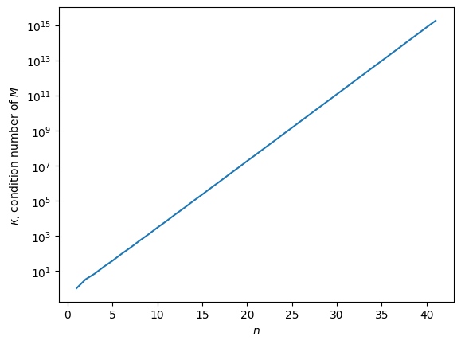
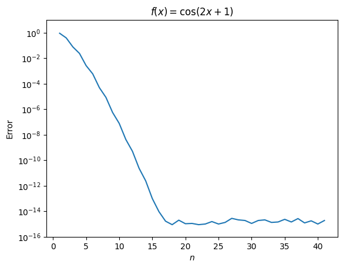
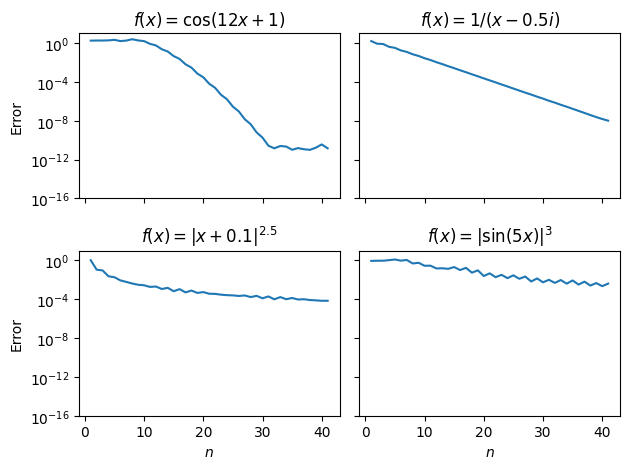
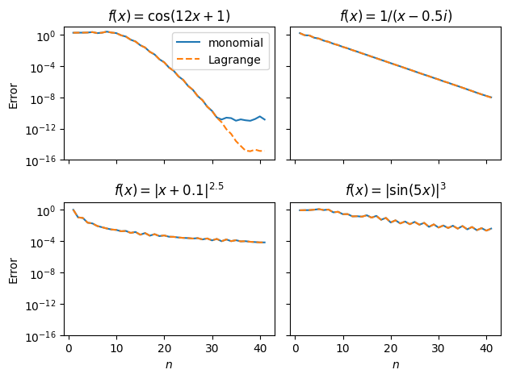
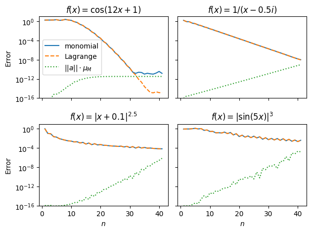

4. Interpolation#
Additional resource
Shen, Z., & Serkh, K. (2022). On polynomial interpolation in the monomial basis
You have a function \(f\) defined on the interval \([a, b]\), but only have access to \(n + 1\) evaluations of the function at unique nodes \(\{x_0, x_1, x_2, \ldots, x_n\} := \{x_i\}_{i=0}^n\), where the function takes values \(\{ y_0, y_1, y_2, \ldots, y_n \} := \{y_i\}_{i=0}^n\). How do you evaluate the function at some new point \(x^{\ast}\)?
We start with the oldest trick in the book:
4.1. The Vandermonde trick#
Try fitting an degree-\(n\) polynomial through the points,
This can be rewritten rather compactly as
or simply \(Ma = y\), where we collected the unknown coefficients into the vector \(a\), the function evaluations into \(y\), and \(M(\{x^{\ast}_i\}_{i=0}^n)\) is called the Vandermonde matrix.
To evaluate \(f\) at a new set of points \(\{x^{\ast}_i\}_{i=0}^m\), we can simply solve \(Ma = y\) with a backwards-stable algorithm to get \(a\), and then left-multiply it by a new Vandermonde matrix \(N(\{x^{\ast}_i\}_{i=0}^m)\) (filled with the \(\{x^{\ast}_i\}_{i=0}^m\).
Algorithm
A backwards-stable and efficient way to interpolate using the Vandermonde trick is to build an \((m+1) \times (n+1) \) interpolation matrix \(L = NM^{-1}\) using the (scaled and centered) source \(\{x_i\}_{i=0}^n\) and target \(\{x^{\ast}_i\}_{i=0}^m\) nodes:
Fill up the \(M\) and \(N\) matrices column-by-column, using element-wise multiplication of entries with those of the previous column,
Compute \(L\) as \(L = (\text{solve}(M^{T}, N^T))^T\), or in MATLAB notation:
L = (M'\N')'.
See, for example this implementation of Helsing’s algorithm by Alex Barnett.
Question
How can doing interpolation like this go wrong? (Hint: think back to the example at the end of Ch. 1.)
Intuitively, one might worry that if the magnitude of the (exact) coefficients \(||a||\) gets large, we’ll run into the same poorly conditioned problem as we did when evaluating the expanded \((x-2)^9\) from the last lecture. This is a valid concern.
However, the frequently used warning of
avoid using Vandermonde matrices for interpolation because their condition number gets large (exponentially) quickly
is misleading, and unnecessarily restricts the use of this method.
Theorem
The monomial/Vandermonde basis is generally as good as a well-conditioned polynomial basis for interpolation, provided that
To investigate when it really is inappropriate to use Vandermonde matrices, we’ll need to distinguish between two different sources of error: the choice of interpolating polynomial, and the choice of basis it is represented in.
4.2 Choice of nodes and choice of basis#
Question
Assume that you are given the function \(f\) and nothing else. What parameters are you free to pick when interpolating it?
If we aren’t given the interpolation/collocation nodes \(\{x_i\}_{i=0}^n\), then they are parameters of the interpolation problem. Once they are chosen, they determine the interpolating polynomial/interpolant uniquely.
But we are also free to choose the basis in which the interpolating polynomial is represented. In the Vandermonde case, that basis is the monomial one: \(1, x, x^2, \ldots, x^n\). This then determines the polynomial coefficients (the \(\{a_i\}_{i=0}^n\) in the Vandermonde system). Other choices include
the Lagrange basis,
\[ l_k(x) := \prod_{j = 0, j \neq k}^n \frac{x - x_j}{x_k - x_j} \quad \text{for } k = 0, 1, \ldots n,\]Chebyshev polynomials,
Legendre polynomials,
Newton polynomials.
Proposition
The nodes \(\{x_i\}_{i=0}^n\) determine the interpolant uniquely as:
5.2.1 Is the monomial basis a bad choice?#
It is true that the condition number of the Vandermonde matrix \(M\) gets exponentially large with \(n\) for any set of real collocation nodes \(\{x_i\}_{i=0}^n\). We can check that with a little script:
import numpy as np
import matplotlib.pyplot as plt
%matplotlib inline
def vdm(x):
"""
Computes the Vandermonde matrix from the input collocation nodes x.
"""
n = x.shape[0]
M = np.ones((n, n))
for i in range (1, n):
M[:, i] = M[:, i-1]*x
return M
# Compute n+1 Chebyshev polynomial roots
chebx = lambda n: np.cos(np.linspace(0, np.pi, n+1))
n = np.arange(1, 42, dtype = int)
cond = np.array([np.linalg.cond(vdm(chebx(m))) for m in n])
plt.figure()
plt.semilogy(n, cond)
plt.xlabel("$n$")
plt.ylabel("$\\kappa$, condition number of $M$")
plt.show()

This suggests that even at the modest \(n = 10\), \(\kappa \approx 10^3\). But let’s see if we lose accuracy already at that point:
def interpvdm(f, x, x_star):
""" Given a function f, collocation nodes x, and target nodes x_star,\
computes interpolation matrix using the monomial basis and returns\
f interpolated at x_star.
"""
r = x.shape[0]
q = x_star.shape[0]
V = np.ones((r, r))
R = np.ones((q, r))
for j in range(1, r):
V[:, j] = V[:, j-1]*x
R[:, j] = R[:, j-1]*x_star
N = np.linalg.solve(V.T, R.T).T
f_star = np.dot(N, f(x))
return f_star
f = lambda x: np.cos(2*x + 1)
x_star = np.linspace(-1, 1, 100)
err = np.array([np.max(np.abs(f(x_star) - interpvdm(f, chebx(m), x_star))) for m in n])
plt.figure()
plt.semilogy(n, err)
plt.title("$f(x) = \\cos(2x + 1)$");plt.xlabel("$n$");plt.ylabel("Error");plt.ylim((1e-16,10))
plt.show()

What?! Interpolation in the monomial basis seems to work just fine beyond \(n = 10\), and its accuracy quickly reaches \(\mu_M\). Now try some other functions that require higher-order interpolation either because they cross zero many times, due to a nearby singularity, or because they are non-smooth:
f = lambda x: np.cos(12*x + 1)
err1 = np.array([np.max(np.abs(f(x_star) - interpvdm(f, chebx(m), x_star))) for m in n])
f = lambda x: 1/(x - 0.5*1j)
err2 = np.array([np.max(np.abs(f(x_star) - interpvdm(f, chebx(m), x_star))) for m in n])
f = lambda x: np.abs(x + 0.1)**2.5
err3 = np.array([np.max(np.abs(f(x_star) - interpvdm(f, chebx(m), x_star))) for m in n])
f = lambda x: np.abs(np.sin(5*x))**3
err4 = np.array([np.max(np.abs(f(x_star) - interpvdm(f, chebx(m), x_star))) for m in n])
fig, ax = plt.subplots(2, 2, sharex = True, sharey = True)
plt.ylim((1e-16,1e1))
ax[0,0].semilogy(n, err1);ax[0,1].semilogy(n, err2);ax[1,0].semilogy(n, err3);ax[1,1].semilogy(n, err4)
ax[1,0].set_xlabel("$n$");ax[1,1].set_xlabel("$n$")
ax[0,0].set_ylabel("Error");ax[1,0].set_ylabel("Error")
ax[0,0].set_title("$f(x) = \\cos(12x + 1)$");ax[0,1].set_title("$f(x) = 1/(x - 0.5i)$");ax[1,0].set_title("$f(x) = |x + 0.1|^{2.5}$");ax[1,1].set_title("$f(x) = |\\sin(5x)|^3$")
plt.tight_layout();plt.show()

Here, we observe different (slower) convergence rates, but it’s not clear whether slower convergence is due to the large condition number of \(M\), or something else. Keeping the same collocation nodes, let us compare interpolation of the above functions using a different basis: the Lagrange basis. Evaluation of the interpolating polynomial \(p\), unlike in the monomial basis, does not have a large \(\kappa\). But first, some things to note:
Aside
Convergence rates. When we talk about “rate of convergence”, we mean the rate at which error in a given algorithm decreases with computational effort (e.g. number of collocation nodes, \(n\)). These rates have different names that are summarized below.
Rate |
Name |
|---|---|
\(cn^{-1}\) |
first-order/algebraic |
\(cn^{-p}\) |
\(p\)th order |
\(c_1a^{-c_2 n} = c_3e^{-c_4 n}\) |
geometric/exponential |
\(c_1e^{-c_2 n^2}\) |
quadratic |
dependent on the smoothness of the function |
spectral |
Aside
Optimal choice of collocation nodes. The choice of having \(\{x_i\}_{i=0}^n\) be the roots of Chebyshev polynomials is not a coincidence. These roots are projections of a half complex unit circle divided into \(n\) equal arcs onto the real axis, including the endpoints \(\pm 1\). It turns out that they are the optimal choice for approximating smooth functions \(f\), meaning that the interpolation error (assuming interpolation is done exactly) is minimal.
Interpolation in the Lagrange basis can be done in a backwards stable way via barycentric interpolation. We call a scipy routine that performs it:
import scipy.interpolate as sciint
baryint = lambda n, f: sciint.barycentric_interpolate(chebx(n), f(chebx(n)), x_star)
f = lambda x: np.cos(12*x + 1)
err1b = np.array([np.max(np.abs(f(x_star) - baryint(m, f))) for m in n])
f = lambda x: 1/(x - 0.5*1j)
err2b = np.array([np.max(np.abs(f(x_star) - baryint(m, f))) for m in n])
f = lambda x: np.abs(x + 0.1)**2.5
err3b = np.array([np.max(np.abs(f(x_star) - baryint(m, f))) for m in n])
f = lambda x: np.abs(np.sin(5*x))**3
err4b = np.array([np.max(np.abs(f(x_star) - baryint(m, f))) for m in n])
fig, ax = plt.subplots(2, 2, sharex = True, sharey = True)
plt.ylim((1e-16,1e1))
ax[0,0].semilogy(n, err1, label = "monomial");ax[0,1].semilogy(n, err2);ax[1,0].semilogy(n, err3);ax[1,1].semilogy(n, err4)
ax[0,0].semilogy(n, err1b, '--', label = "Lagrange");ax[0,1].semilogy(n, err2b, '--');ax[1,0].semilogy(n, err3b, '--');ax[1,1].semilogy(n, err4b, '--')
ax[1,0].set_xlabel("$n$");ax[1,1].set_xlabel("$n$");ax[0,0].set_ylabel("Error");ax[1,0].set_ylabel("Error")
ax[0,0].set_title("$f(x) = \\cos(12x + 1)$");ax[0,1].set_title("$f(x) = 1/(x - 0.5i)$");ax[1,0].set_title("$f(x) = |x + 0.1|^{2.5}$");ax[1,1].set_title("$f(x) = |\\sin(5x)|^3$")
ax[0,0].legend()
plt.tight_layout();plt.show()

Question
What do we observe here and what does it tell us about the source of error in interpolation in the monomial basis?
It seems from above that interpolation in the monomial basis is pretty much as accurate as expressing the interpolant in the Lagrange basis (via the barycentric formula). But we know that the latter is a well-conditioned problem, so clearly the slower convergence in some of the plots cannot be a consequence of the large \(\kappa\) of \(M\). But, there is a clue: convergence of interpolation in the monomial basis stagnates at \(10^{-12}\) for the top left \(f(x) = \cos(12x + 1)\), whereas barycentric interpolation gets the error down to \(\mu_M\). Where does this stagnation come from?
Question
What does \(\kappa_M\) measure?
The condition number \(\kappa\) of \(M\) measures the forward error,
Question
What does a small backward error imply for \(\tilde{p} - p\)?
If the computed polynomial expansion is \(\tilde{p}\), then a small backward error implies that \(\tilde{p} - p\), is almost \(0\) at the \(\{x_i\}_{i=0}^n\) (we found a poly that has nearly the same roots). If the interpolating polynomial was chosen appropriately (via the choice of nodes \(\{x_i\}_{i=0}^n\)), then
This can be used to bound the error of monomial interpolation,
It turns out that as long as the backward error is smaller than the polynomial interpolation error, the use of the monomial basis doesn’t incur significant additional error. But once the first term becomes smaller than the backward error, accuracy stagnates.
Question
But when is the backward error small?
Backwards stability guarantees that \(\tilde{a}\) solves an approximate problem
Result
We need not worry about the poor conditioning of the Vandermonde matrix until its condition number becomes \(1/\mu_M\) (in practice, at around \(n \approx 40\)), and
\(||\tilde{a}||\) is a good predictor of the error induced by the use of the monomial basis. When this gets large, that’s when we do need to worry about our choice of basis!
Let’s revisit the interpolation examples one more time, this time trying to explain the (lack of) stagnation in the accuracy by checking the backward error \(||\tilde{a}||\mu_M\):
def vdmcoeffs(x, f):
""" Given a function f and collocation nodes x, computes\
the 2-norm of the polynomial coefficient vector in the monomial\
basis.
"""
r = x.shape[0]
V = np.ones((r, r))
for j in range(1, r):
V[:, j] = V[:, j-1]*x
a = np.linalg.solve(V, f(x))
return np.linalg.norm(a)
f = lambda x: np.cos(12*x + 1)
err1p = 1e-16*np.array([vdmcoeffs(chebx(m), f) for m in n])
f = lambda x: 1/(x - 0.5*1j)
err2p = 1e-16*np.array([vdmcoeffs(chebx(m), f) for m in n])
f = lambda x: np.abs(x + 0.1)**2.5
err3p = 1e-16*np.array([vdmcoeffs(chebx(m), f) for m in n])
f = lambda x: np.abs(np.sin(5*x))**3
err4p = 1e-16*np.array([vdmcoeffs(chebx(m), f) for m in n])
fig, ax = plt.subplots(2, 2, sharex = True, sharey = True)
plt.ylim((1e-16,1e1))
ax[0,0].semilogy(n, err1, label = "monomial");ax[0,1].semilogy(n, err2);ax[1,0].semilogy(n, err3);ax[1,1].semilogy(n, err4)
ax[0,0].semilogy(n, err1b, '--', label = "Lagrange");ax[0,1].semilogy(n, err2b, '--');ax[1,0].semilogy(n, err3b, '--');ax[1,1].semilogy(n, err4b, '--')
ax[0,0].semilogy(n, err1p, ':', label = "$||a||\\cdot \\mu_M$");ax[0,1].semilogy(n, err2p, ':');ax[1,0].semilogy(n, err3p, ':');ax[1,1].semilogy(n, err4p, ':')
ax[1,0].set_xlabel("$n$");ax[1,1].set_xlabel("$n$");ax[0,0].set_ylabel("Error");ax[1,0].set_ylabel("Error")
ax[0,0].set_title("$f(x) = \\cos(12x + 1)$");ax[0,1].set_title("$f(x) = 1/(x - 0.5i)$");ax[1,0].set_title("$f(x) = |x + 0.1|^{2.5}$");ax[1,1].set_title("$f(x) = |\\sin(5x)|^3$")
ax[0,0].legend()
plt.tight_layout();plt.show()

4.3 Barycentric interpolation#
For when the monomial basis produces a large backward error, an alternative representation of the interpolating polynomial \(p\) is in the Lagrange basis, with basis functions
Naively evaluating \(p\) at each \(x\) using this formula takes \(\mathcal{O}(n^2)\) effort,
Question
Why?
because each \(l_j\) takes \(\mathcal{O}(n)\) operations (a product of \(n\) terms), then it takes \(\mathcal{O}(n)\) again to add them up. For a large number of \(x\), this is unacceptably slow, and we can actually do it in \(\mathcal{O}(n)\) time.
Aside
The 3 important plots. We already talked about the convergence rate of an algorithm (and the most important plot: the error vs computational effort), and now a new concept is its complexity. This is another important plot that shows the scaling of computational cost (i.e. time) with effort, e.g. \(n\). The third plot is not independent of these two, the work-precision diagram shows the error as a function of computational cost, which is important for practical considerations. To summarize:
convergence: error \(\delta\) vs. effort \(n\),
complexity: cost \(t\) vs effort \(n\),
work-precision: error \(\delta\) vs. cost \(t\).
The idea behing the \(\mathcal{O}(n)\) algorithm is to observe that the numerator of the \(l_j\)-s have common factors. Define the node polynomial
Question
Show this yourself using l’H^{o}pital’s rule.
Also define the weights
Question
Verify this yourself.
Substituting into our expression for \(l_j(x)\), we get
The weights \(\lambda_j\) takes \(\mathcal{O}(n^2)\) time, but the big difference is that they only need to be computed once, and not for each \(x\). In the best case, for e.g. Chebyshev collocation nodes, they are known analytically. Once the weights are known, evaluating \(p(x)\) then only takes \(\mathcal{O}(n)\) effort.
Exercises
Write code using the barycentric interpolation formula (you may use an external package for this, or you may write your own) to compute a sequence of polynomial interpolants to a function \(f\) on \([−1, 1]\) in points selected by a greedy algorithm: take \(x_0\) to be a point where \(|f(x)|\) achieves its maximum, then \(x_1\) to be a point where \(|(f − p_0)(x)|\) achieves its maximum, then \(x_2\) to be a point where \(|(f − p_1)(x)|\) achieves its maximum, and so on. Plot the error curves \((f − p_n)(x)\), \(x \in [−1, 1]\), computed by this algorithm for \(f(x) = |x|\) and \(0 \leq n \leq 25\). Comment on the spacing of the grid \(\{ x_0, x_1, \ldots, x_{25} \}\).
Find an expression for the Lagrange weights for \(n\) evenly spaced interpolation nodes on \([-1, 1]\) (including the endpoints). What happens to the weights as \(n\) increases? (This is what causes the Runge phenomenon!)